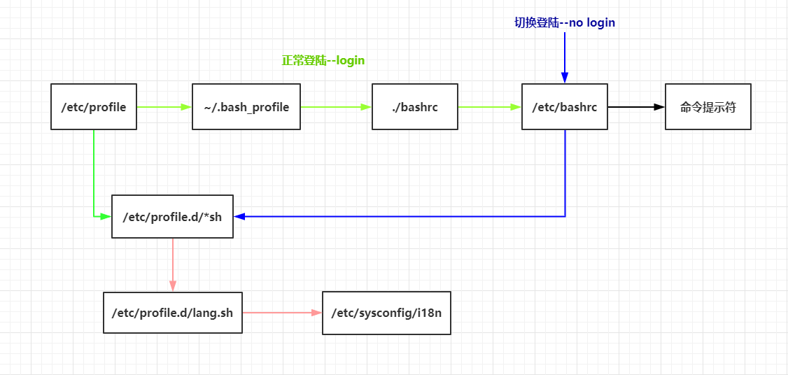

Linux--ChapterThree
Authority
查看权限
ls -l /dev/ | more #打印的第一列内容如下
-rw-r--r-- 文件类型及权限
- 文件类型(-文件 d目录 l软连接文件) #不常用几乎见不到(b块设备文件,c字符设备文件,s套接字文件,p管道文件)
rw- r-- r--
u所有者 g所属组 o其他人
r读 w写 x执行
修改权限
chmod [选项] 模式 文件名
选项
-R 递归
模式
[ugoa][+-=][rwx]
[mode=421]
chmod [ugoa][+-=][rwx] 文件名 #给[所有者|所属组|其他人][赋予|收回][读|写|执行]权限
chmod [ugoa]=[rwx] 文件名 #同时更改所有者|所属组|其他人权限,中间用逗号隔开
权限数字表示
r ---- 4
w ---- 2
x ---- 1
rwxr-xr-x 755
chmod 755 文件名
常用权限数字 777最高权限 644所有者读写,所属组和其他人读和执行 755所有者读写执行,所属组和其他人读执行
读写执行权限对文件/目录的作用
权限对文件的作用:
r:读取文件内容(cat more head tail)
w:编辑新增修改文件内容(vi/vim echo) #对文件有写的权限不包含删除,因为其执行权限是上一级目录控制
x:可执行
权限对目录的作用:
r:可以查询目录下文件名(ls)
w:具有修改目录结构的权限,[新建|删除|重命名]此目录下的文件和目录,剪切(touch rm mv cp)
x:可以进入目录(cd)
对文件来说,最高权限是x执行
对目录来说,最高权限是w写, 对目录来说,有意义的权限只有 0,5,7
原则:对于文件,少赋予x权限 对于目录,少赋予w权限
修改文件的所有者
chown 所有者 文件名
chown 所有者:所属组 文件名
chgrp 所属组 文件名
默认权限umask
cat /etc/profile #umask在配置初始文件目录时控制权限
规则为最高权限 - umask值 #root用户默认为022,普通用户默认002
1 文件默认最高权限666, 目录默认最高权限777
2 换算规则为 (root用户为例)
文件 rw-rw-rw- - ----w--w- = rw-r--r--
目录 rwxrwxrwx - ----w--w- = rwxr-xr-x
Configuration
登陆时配置文件的加载顺序

登陆进入Linux系统时, 配置文件依次加载, 后写入的变量会造成覆盖
1. 每个文件加载完成后都会调用下一个文件进行执行
2. /etc/目录下的为全局配置文件 ~目录下的为当前用户本地配置文件
3. 正常登陆后依次加载全局配置文件和本地配置文件中的变量,若有重复后定义的将覆盖前定义的变量(绿色线路)
4. 若切换用户,如root切换为其他用户(蓝色线路)
5. 无论如何登陆都会加载语言文件(粉红色线路)